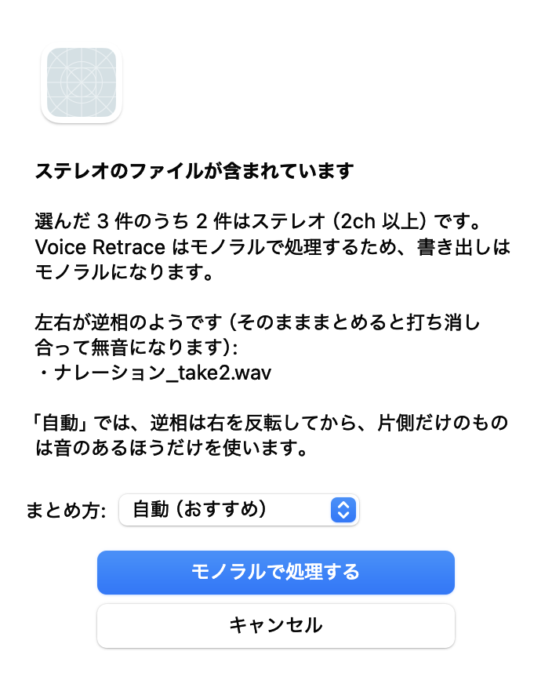

Voice Retrace マニュアル
https://urmasound.github.io/voice-retrace/ ・ URMA Sound
⬇ この1インストール
必要な
- 配布ページから
DMG （VoiceRetrace-1.0.3.dmg）を ダウンロードして、 ダブルクリックで 開きます。 - 開いた
ウィンドウの 中の 「Voice Retrace」を、となりの 「Applications」フォルダに ドラッグします。 - アプリケーションフォルダから
「Voice Retrace」を 開きます。 初回は 「インターネットから ダウンロードされた アプリケーションです。 開いても よろしいですか？」と 確認されるので、「開く」を 押します。
DMG の
2初めて開いたとき
最初に
 1
2
1
2
- 同意して
使う …内容を 確認し、 同意する 場合に 押します。 次からは 表示されません。 - 同意しない
（終了） …アプリを 終了します。
あとから
3音声ファイルを入れる
 1
2
3
4
1
2
3
4
- ここに
ドロップ …音声ファイルや フォルダを、 Finder から ウィンドウに ドラッグします。 ウィンドウの どこに 落としても 大丈夫です。 複数まとめて 入れられます。 - ファイルを
選ぶ… …ドラッグの 代わりに、 ファイルを 選んで 入れる こともできます。 - ☕ 支援する …
Ko-fi の ページが 開きます （任意。 支援してもしなくても 機能は 同じです）。 - ライセンスと
免責事項 …いつでも 読み返せます。
フォルダを
得意なのは
4ステレオのファイル
Voice Retrace は

| 自動 | ファイルごとに |
|---|---|
| 左右を | 左と |
| 右を | 右の |
| 左だけ／右だけ | 片方の |
逆相・片側だけ・左右で
気に
処理待ちの
5処理の進み具合・キャンセル・並べ替え
入れた
 1
2
3
4
5
1
2
3
4
5
- 処理中の
ファイル …いちばん上に 表示され、 残り 時間の 目安と 進み具合の バーが 出ます。 - × ボタン …
処理中の ファイルは その 場で 止め、 待っている ファイルは 処理待ちから 外します。 止めた ファイルは 「完了」の 欄に 「キャンセル」と して 残ります。 - 処理待ちの
ファイル …ドラッグで 順番を 入れ替えられます。処理中の ファイルの 。上には 入れられません 先に 処理したい ファイルが ある ときは、 処理中の ファイルを × で 止めてください。 - 全体の
残り …処理待ちも 含めた、 終わるまでの 時間の 目安です。 使ううちに、 お使いの Mac に 合わせて 正確に なります。 - 完了 …
終わった ファイルが ここに 並びます。 選ぶと、 下に 再生パネルが 出ます。
キャンセルや
右クリックからは
6聴いて、混ぜて、書き出す
 1
2
3
4
5
6
7
1
2
3
4
5
6
7
- 完了した
ファイルを …選ぶ 選んだ ファイルが、 下の パネルで 再生できるようになります。 - 再生・
一時停止 …スペースキーでも 操作できます。 - 再生位置 …
ドラッグして、 聴きたい ところへ 移動します。 - バランス …
右端 （100%）が Sidon で 修復した 音、 左端 （0%）が 修正前の 音です。再生しながら 動かすと、 。その 場で 音が 変わります - 0% / 50% / 100% …
バランスを すぐ その 値に します。 修正前と 修復後を 聴き 比べる ときに 便利です。 - 書き出し形式 …
サンプルレート （48k / 44.1k）と ビット深度 （24bit / 16bit）を 選びます。 選んだ 設定は 次回も 覚えています。 - 書き出し… …
今の バランスと 形式で WAV を 保存します。 保存先と ファイル名を 確認して 「保存」を 押します。
7書き出したファイル
| 保存先 | 初期値は、 |
|---|---|
| ファイル名 | バランス 100% の元の名前_retrace.wavそれ以外は 元の名前_retrace_mix85.wav のように、 |
| 形式 | WAV・モノラル。 |
| 長さ・ | 元の |
| 元の | 書き換えません |
ステレオの
8うまくいかないとき
- アプリが
開けない - Apple Silicon
（M1 以降）の Mac と macOS 15 以降が 必要です。 Intel の Mac では 動きません。 空き容量が 1GB ほど 必要です。 会社や 学校などで 管理されている Mac では、 管理者の 設定で 開けない ことがあります。 - 「準備中…」の
まま 進まない・応答しない - 初めて
開いた ときの 準備は、 ふつう 数秒〜数十秒で 終わります。 数分たっても 変わらない ときは、 アプリを 終了してから 開き直してください。 それでも 同じ ときは、 下の 「ログ」を 送ってください。 - 不具合を
報告したい （ログ） - メニューの
「Voice Retrace」 → 「ログを Finder で 表示」を 選ぶと、 動作の 記録 （ voiceretrace.log）が表示されます。 この ファイルを 添えて 連絡していただけると、 原因を 調べやすくなります。 音声の 中身は 記録されません （記録されるのは、 Mac の 機種と macOS の バージョン、 アプリの 場所、 処理した ファイルの 名前と 長さ、 処理時間、 使った メモリなどです）。 - 一覧に
「エラー」と 出た - 「エラー」の
文字に マウスを 乗せると、 理由が 表示されます。 音声ファイルが 壊れている、 対応していない 形式、 などが 考えられます。 別の 形式 （wav など）に 書き出し直してから 入れてみてください。 - 「音声ファイルが
見つかりませんでした」と 出た - 入れた
ファイルが 対応形式 （wav / aiff / flac / mp3 / m4a / caf）ではないか、 フォルダの 中に 音声ファイルが ありません。 DAW の 波形キャッシュなどは 処理されません。 - 処理に
時間が かかる - 古い
機種ほど 時間が かかります。 長い ファイルは、 処理待ちの うちに 順番を 入れ替えて、 急ぐ ものを 先に してください。 - 声がにじむ・
二重に 聞こえる - バランスを
100% （Sidon 側）に 近づけてください。 修正前の 音を 混ぜる ほど、 にじみやすくなります。 - 音楽や
効果音が 消えた・崩れた - Sidon は
話し声専用です。 声以外の 音は 消えたり崩れたりします。 声だけの トラックに 使うのが おすすめです。 - アンインストールしたい
- アプリケーションフォルダの
「Voice Retrace」を ゴミ箱に 入れてください。 設定も 消す 場合は、 ターミナルで defaults delete jp.urmasound.voiceretraceを実行します。
解決しない